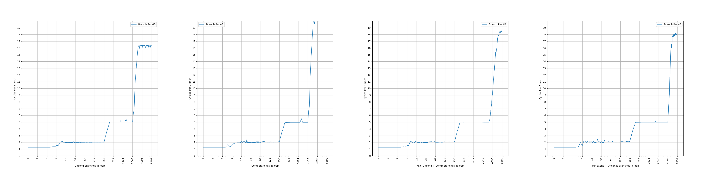
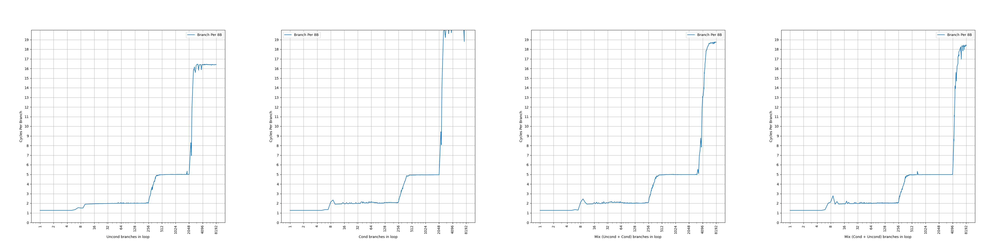
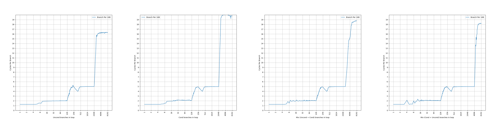
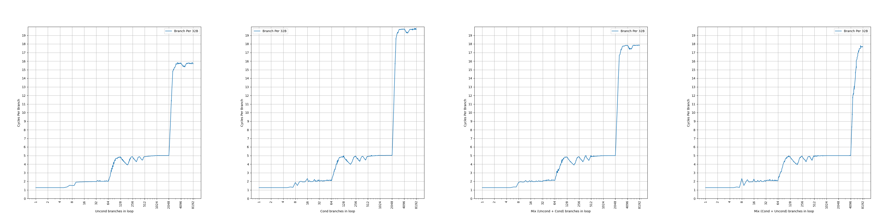
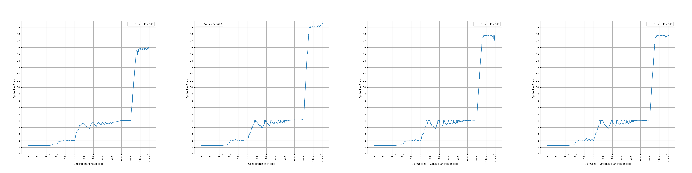
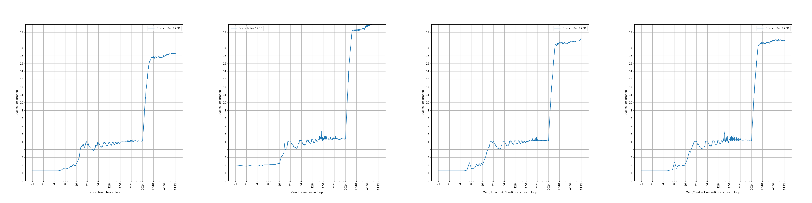

AMD Zen 1 的 BTB 结构分析¶
背景¶
AMD Zen 1 是 AMD 在 2017 年发布的 Zen 系列第一代微架构。在之前，我们分析了 ARM Neoverse N1 和 V1 的 BTB，那么现在也把视线转到 AMD 上，看看 AMD 的 Zen 系列的 BTB 是如何演进的。
官方信息¶
AMD 在 Software Optimization Guide for AMD Family 17h Processors (Publication No. 55723) 中有如下的表述：
The branch target buffer (BTB) is a three-level structure accessed using the fetch address of the current fetch block.
Zen 1 的 BTB 有三级，是用当前 fetch block 的地址去查询。
Each BTB entry includes information for branches and their targets. Each BTB entry can hold up to two branches if the branches reside in the same 64-byte aligned cache line and the first branch is a conditional branch.
Zen 1 的 BTB entry 有一定的压缩能力，一个 entry 最多保存两条分支，前提是两条分支在同一个 64B 缓存行中，并且第一条分支是条件分支。这样，如果第二条分支是无条件分支，分支预测的时候，可以根据第一条分支的方向预测的结果，决定要用哪条分支的目的地址作为下一个 fetch block 的地址。虽然有压缩能力，但是没有提到单个周期预测两条分支，所以只是扩大了等效 BTB 容量。
例如，有这么一段代码：
那么 jnz 和 jmp 指令可以放到同一个 entry 当中，一次读出来，然后对 jnz 指令进行分支方向预测：
- 如果 jnz 预测为跳转，那么当前 fetch block 从 entrypoint 开始，到 jnz 结束；下一个 fetch block 从 targetA 开始
- 如果 jnz 预测为不跳转，那么当前 fetch block 从 entrypoint 开始，到 jmp 结束；下一个 fetch block 从 targetB 开始
L0BTB holds 4 forward taken branches and 4 backward taken branches, and predicts with zero bubbles.
Zen 1 的第一级 BTB 可以保存 4 条前向分支和 4 条后向分支，预测不会带来流水线气泡，也就是说每个周期都可以预测一次。
L1BTB has 256 entries and creates one bubble if prediction differs from L0BTB.
Zen 1 的第二级 BTB 可以保存 256 个 entry，但不确定这个 entry 是否可以保存两条分支，也不确定这个 entry 数量代表了实际的 entry 数量还是分支数量，后续会做实验证实；预测会产生单个气泡，意味着它的延迟是两个周期。
L2BTB has 4096 entries and creates four bubbles if its prediction differs from L1BTB.
Zen 1 的第三级 BTB 可以保存 4096 个 entry，但不确定这个 entry 是否可以保存两条分支，也不确定这个 entry 数量代表了实际的 entry 数量还是分支数量，后续会做实验证实；预测会产生四个气泡，意味着它的延迟是五个周期。
简单整理一下官方信息，大概有三级 BTB：
- (4+4)-entry L0 BTB, 1 cycle latency
- 256-entry L1 BTB, 2 cycle latency
- 4096-entry L2 BTB, 5 cycle latency
下面结合微架构测试，进一步研究它的内部结构。
微架构测试¶
在之前的博客里，我们已经测试了各种处理器的 BTB，在这里也是一样的：按照一定的 stride 分布无条件直接分支，构成一个链条，然后测量 CPI。
考虑到 Zen 1 的 BTB 可能出现一个 entry 保存两条分支的情况，并且还对分支的类型有要求，因此下面的测试都会进行四组，分别对应四种分支模式：
- uncond：所有分支都是无条件分支：uncond, uncond, uncond, uncond, ...
- cond：所有分支都是条件分支：cond, cond, cond, cond, ...
- mix (uncond + cond)：条件分支和无条件分支轮流出现，但 uncond 在先：uncond, cond, uncond, cond, ...
- mix (cond + uncond)：条件分支和无条件分支轮流出现，但 cond 在先：cond, uncond, cond, uncond, ...
stride=4B¶
首先是 stride=4B 的情况：

可以看到，图像上出现了三个比较显著的台阶：
- 所有分支模式下，第一个台阶都是到 4 条分支，CPI=1.25，比 1 周期略高，猜测是因为循环体比较小，循环结束的操作的开销没有平摊造成的；4 对应了 4-entry 的 L0 BTB
- 所有分支模式下，第二个台阶都是到 256 条分支，CPI=2，对应了 256-entry 的 L1 BTB，意味着 L1 BTB 没有做一个 BTB entry 记录两条分支的优化，实际上就是 256 个 entry 保存 256 条分支
- 在 uncond 和 cond 模式下，第三个台阶到 2048 条分支，CPI=5，对应 L2 BTB，没有显现出完整的 4096 的大小，意味着 L2 BTB 实际上只有 2048 个 entry，每个 entry 最多保存两条分支，而 uncond 和 cond 模式下，不满足每个 entry 保存两条分支的条件，所以只保存了 2048 条分支
- 在 mix (uncond + cond) 模式下，第三个台阶一直延伸到了 3072，超出了 2048，意味着出现了两条分支保存在一个 entry 的情况，但并没有体现出完整的 4096 条分支的大小
- 在 mix (cond + uncond) 模式下，第三个台阶延伸到了 4096，体现出完整的 4096 的 L2 BTB 大小
可以观察到，过了 L2 BTB 容量以后，性能骤降到十多个 cycle，此时还没有超出 L1 ICache 容量，这么长的延迟，即使是在 uncond 模式下，可以在译码的时候发现 uncond 分支并 redirect，也要 16+ 个周期，可见其流水线之长。
stride=8B¶
接下来观察 stride=8B 的情况：

现象和 stride=4B 基本相同，各级 BTB 显现出来的大小没有变化。
stride=16B¶
继续观察 stride=16B 的情况：

相比 stride=4B/8B，L0 BTB 的行为没有变化；L1 BTB 的容量减半到了 128，意味着 L1 BTB 采用了组相连，此时有一半的 set 不能被用上。此外，比较特别的是，从 stride=16B 开始，CPI=5 的平台出现了波动，CPI 从 5 变到 4 再变到了 5，猜测此时 L1 BTB 也有一定的比例会介入。L2 BTB 在 mix (uncond + cond) 模式下，拐点从 3072 前移到 2560。
stride=32B¶
继续观察 stride=32B 的情况：

相比 stride=16B，L0 BTB 的行为没有变化；L1 BTB 的容量进一步减到了 64，符合组相连的预期；L2 BTB 在 mix (uncond + cond) 模式下不再能体现出 3072 的容量，而是 2048：此时在一个 64B cacheline 中只有两条分支，第一条分支是 uncond，第二条分支是 cond，不满足 entry 共享的条件（必须 cond + uncond，不能是 uncond + cond），此时 uncond 和 cond 分别保存在两个 entry 中，每个 entry 只保存一条分支，因此 L2 BTB 只能体现出 2048 的容量。而 mix (cond + uncond) 模式依然满足 entry 共享的条件，所以依然体现出 4096 的容量。
stride=64B¶
继续观察 stride=64B 的情况：

相比 stride=32B，L0 BTB 的行为没有变化；L1 BTB 的容量进一步减到了 32，符合组相连的预期；L2 BTB 在 mix (cond + uncond) 模式下只能体现出 2048 的容量，此时每个 64B cacheline 都只有一条分支，不满足两条分支共享一个 entry 的条件。
stride=128B¶
继续观察 stride=128B 的情况：

相比 stride=64B，L0 BTB 的行为没有变化；L1 BTB 的容量进一步减到了 16，符合组相连的预期；L2 BTB 的容量减半到了 1024，意味着 L2 BTB 也是组相连结构。
小结¶
测试到这里就差不多了，更大的 stride 得到的也是类似的结果，总结一下前面的发现：
- L0 BTB 是 (4+4)-entry，1 cycle latency，不随着 stride 变化，全相连
- L1 BTB 是 256-entry，2 cycle latency，容量随着 stride 变化，大概率是 PC[n:3] 这一段被用于 index，使得 stride=16B 开始容量不断减半
- L2 BTB 是 2048-entry，5 cycle latency，容量随着 stride 变化，大概率是 PC[n:6] 这一段被用于 index，使得 stride=128B 开始容量不断减半；每个 entry 最多保存两条分支，前提是这两条分支在同一个 cacheline 当中，并且第一条是 cond，第二条是 uncond；因此最多保存 4096 个分支
也总结一下前面发现的各种没有解释的遗留问题：
- stride=4B/8B/16B 且为 mix (uncond + cond) 模式时，L2 BTB 体现出 3072/3072/2560 的容量，而非 4096：解析见后
- L2 BTB 对应的 CPI=5 的台阶出现比较明显的，在 4-5 之间的波动：暂无解释
接下来尝试解析一下这些遗留问题背后的原理。部分遗留问题，并没有被解释出来，欢迎读者提出猜想。
解析遗留问题¶
stride=4B/8B/16B 且为 mix (uncond + cond) 模式时，L2 BTB 体现出 3072/3072/2560 的容量，而非 4096¶
前面测试出来，观察到两个奇怪的容量：3072 和 2560，分别有 3 和 5 的因子。下面通过进一步的实验，观察它的来源。
stride=16B 对应 2560 的 L2 BTB 容量¶
首先针对这个 2560 的拐点，做了一系列测试，在 stride=16B 的情况下，测试不同的 uncond/cond 分支的组合，下面是 64B cacheline 内四条分支的类型的不同组合（U 代表 Uncond，C 代表 Cond），以及该组合对应的容量：
- CCCC: 2048（即 cond 模式）
- CCCU: 2560
- CCUC: 2560
- CCUU: 2560
- CUCC: 2560
- CUCU: 4096（即 mix (cond + uncond) 模式）
- CUUC: 2560
- CUUU: 2560
- UCCC: 2048
- UCCU: 2560
- UCUC: 2560（即 mix (uncond + cond) 模式）
- UCUU: 2560
- UUCC: 2048
- UUCU: 2560
- UUUC: 2048
- UUUU: 2048（即 uncond 模式）
可以观察到，如果没有出现连续的 CU（CCCC/UCCC/UUCC/UUUC/UUUU），容量是 2048；如果出现了一组 CU（CCCU/CCUC/CCUU/CUCC/CUUC/CUUU/UCCU/UCUC/UCUU/UUCU），容量是 2560；出现了两组 CU（CUCU），就是 mix (cond + uncond) 模式，容量是 4096。
一种可能的猜想：
- 如果没有出现连续的 CU，那么每个 branch 占用一个 entry，那么容量就是 2048 个 branch
- 如果出现了一组 CU，那么一个 64B cacheline 里的 4 个 branch 对应 3 个 entry，那么前 2048 个 branch 对应 1536 个 entry，还剩下 512 个 entry，这些 entry 每个 entry 只放 1 个 branch（讨论见后），所以最后容量是
2048+512=2560个 branch - 如果出现了两组 CU，那么每一组 CU 的两个 branch 对应一个 entry，容量是 4096 个 branch
但是也遗留了一个问题，就是只有一组 CU 的情况下，为啥剩下的 512 个 entry 只放 512 个 branch，而不能放 1024 个 branch，按理说是可能再次出现 cond + uncond 合并？这个问题暂时还没有解释。
由此可以看出，2560 的来源是 4 路组相连，然后其中一路发生了 cond + uncond 的合并，所以最终是 5 个分支保存到 4 路当中，再来一条分支就会放不下。
stride=4B/8B 对应 3072 的 L2 BTB 容量¶
带着上面的分析，再去观察 stride=4B/8B 时的 3072:3072 有 3 的因子，所以大概率是从 2 路组相连得来，其中一路出现了 cond + uncond 的合并，所以出现了 3 个 branch 占用 2 个 entry 的情况，最后体现出来就是 3072 的 L2 BTB 容量。
似乎到这里，3072 和 2560 分别的 3 和 5 的因子都能解释了，剩下的就是解析具体的组相连的结构。
组相连分析¶
那么到底是 2 路组相连，还是 4 路组相连呢，另外这个组相连的 set 是怎么构成的呢？
首先回忆一下，在 ARM Neoverse N1 中，连续的 32B 内能放 6 个分支，但是 stride=8B 的时候，一次就会往同一个 set 里增加 4 个分支，于是一个 set 内的分支数从 0 变到 4 再变到 8，拐点出现在 4 个分支，而不是 6 个分支。因此为了达到前面出现的 3072 和 2560 的拐点，新增的分支也得均匀地分到各个 set 当中。
前面根据 L2 BTB 的容量分析到，L2 BTB 的 Index 可能是 PC[n:6]，但肯定不是简单的这么取，否则也会出现 ARM Neoverse N1 类似的问题。只能说明 PC[6] 往上有若干个 bit 是单独出现在 L2 BTB 的 Index 当中的，而 PC[5] 以下的 bit，可能以某种哈希函数的形式，参与到 Index 当中。
所以，L2 BTB 可能是以 PC[n:6] 作为 Index 去访问，然后内部有多个 bank，每个 bank 内部是 2 路组相连。bank index 是通过 PC 经过哈希计算得来，使得在 stride=4B/8B 的时候，体现出 2 路组相连，而在 stride=16B 的时候，体现出 4 路组相连。同时，分支还能够均匀地分布到各个 bank 当中，避免了和 ARM Neoverse N1 类似的情况的发生。